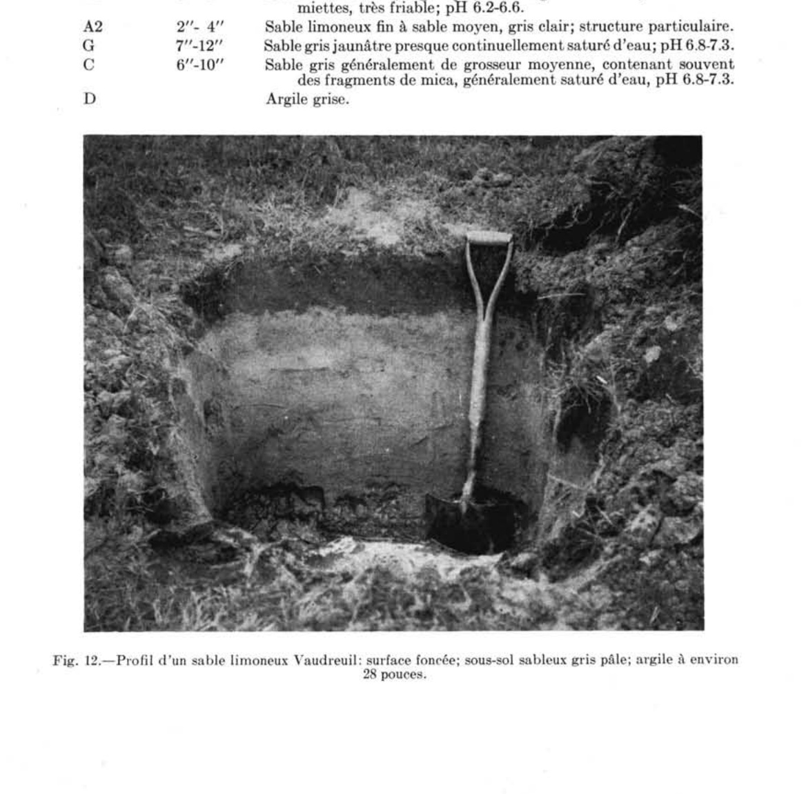

Identification & Caractéristiques Générales
Le matériau parental de la série Vaudreuil est constitué de sables fins à moyens, d'une épaisseur variant généralement de 30 à 90 centimètres (1 à 3 pieds), qui recouvrent un substrat d'argile marine lourde et imperméable. Ces dépôts alluvionnaires ou littoraux se retrouvent dans les basses terres et sur les terrasses de la plaine, occupant des positions topographiques planes, sub-horizontales ou en position de dépression, souvent en bordure de zones tourbeuses. La surface est exempte de pierres et présente un micro-relief nul ou très faible. Le substratum argileux restreint l'infiltration verticale des eaux, ce qui engendre des conditions de saturation prolongée et maintient la nappe phréatique à un niveau élevé durant la majeure partie de l'année.
Le profil morphologique se caractérise par un mauvais à très mauvais drainage naturel et une aération déficiente du sous-sol. À l'état naturel, le sol possède une couche de surface organique (horizons L-H et Ah) noire et épaisse, atteignant parfois plus de 15 à 30 centimètres. Le sous-sol (horizon Bg) est composé de sable fin loameux ou de sable moyen, marqué par une couleur dominante grise témoignant des conditions gleyfiées et réductrices, accompagnée de marbrures de couleur brun jaunâtre. La réaction du sol est acide en surface, affichant généralement un pH d'environ 5,5, et devient graduellement moins acide en profondeur pour atteindre environ pH 6,5 à 60 centimètres. En raison de l'excès d'eau et de la compaction relative induite par la saturation, les sols sont froids, tardifs au réchauffement printanier et retiennent une forte humidité disponible.
Les aptitudes agronomiques de la série Vaudreuil sont fortement limitées par le régime hydrique excédentaire et la faible fertilité naturelle. La grande culture y est généralement peu rentable : les céréales y sont sujettes à la verse et à une maturation tardive, le maïs souffre des températures froides du sol, et les légumineuses ainsi que les prairies pérennes dépérissent ou sont envahies par les mauvaises herbes, les laîches et les joncs. En revanche, moyennant des investissements majeurs en drainage souterrain pour assainir le profil, ces sols conviennent adéquatement à la production maraîchère intensive (laitue, choux, carottes, haricots, pois et fraises). La mise en valeur agricole de ces terres requiert obligatoirement, outre l'installation d'un réseau de drainage efficace, des applications régulières de chaux pour corriger l'acidité de surface ainsi que des apports massifs et équilibrés d'engrais minéraux complets pour pallier la carence en éléments nutritifs.
Classification Taxonomique & Environnement Pédologique
| Ordre Pédologique | Gleysolique |
|---|---|
| Grand Groupe (SCSS) | Gleysol humique |
| Sous-Groupe Taxonomique | Gleysol humique orthique |
| Famille Pédologique | Sableuse, mixte sableux, neutre |
| Mode de Dépôt Parental | Fluviatile |
| Classe de Drainage Naturel | Mal drainé |
| Régime Thermique & Humidité | Frais / Perhumide |
Description Morphologique du Profil Type
Séquences génétiques des horizons pédologiques caractérisant le profil type représentatif de la série Vaudreuil :
Profil naturel (vierge) — Comté de Champlain
✓ Source : Comté de Champlain — Page 47Couleur Munsell : 10YR 2/1
Structure & Consistance : Polyédrique à granulaire
Description morphologique : Débris organiques, décomposition très variable; noir (10YR 2/1); pH : 4.7.
Couleur Munsell : 2.5Y 5/2
Structure & Consistance : Polyédrique à granulaire
Description morphologique : Sable fin à très fin brun gris à olive clair (2.5Y 5/2 - 5/4); présence de nombreuses taches de rouille; pH : 5.8.
Profil cultivé (agricole) — Comté de Argenteuil
✓ Source : Comté de Argenteuil — Page 74Couleur Munsell : Non précisée
Structure & Consistance : Polyédrique à granulaire
Description morphologique : Sable limoneux noir à gris foncé ou brun grisâtre foncé, riche en matière organique, très perméable et friable; pH 5.5-6.5.
Couleur Munsell : Non précisée
Structure & Consistance : Monogranulaire
Description morphologique : Sable gris pâle à structure monogranulaire, meuble et perméable; pH 5.7-6.5.
Couleur Munsell : Non précisée
Structure & Consistance : Polyédrique à granulaire
Description morphologique : Sable gris à gris jaunâtre clair, moyen et fin (occasionnellement grossier) contenant des particules sombres de mica, structure; perméable; pH 6.5-6.8.
Couleur Munsell : Non précisée
Structure & Consistance : Polyédrique à granulaire
Description morphologique : Argile grise imperméable; pH 6.8-7.2.
Profil cultivé (agricole) — Comté de L'assomption
✓ Source : Comté de L'assomption — Page 56Couleur Munsell : 5YR 2/1
Structure & Consistance : Polyédrique à granulaire
Description morphologique : Sable moyen loameux et organique, noir (5YR 2/1); pH 5.6 à 6.4.
Couleur Munsell : 10YR 6/2
Structure & Consistance : Monogranulaire
Description morphologique : Sable moyen brunâtre pâle à gris (10YR 6/2-5/1); structure monogranulaire; lâche; pH 6.0 à 6.6.
Couleur Munsell : Non précisée
Structure & Consistance : Polyédrique à granulaire
Description morphologique : Substratum plat d'argile marine; très peu perméable; pH 6.4 à 7.0.
Profil cultivé (agricole) — Comté de Portneuf
✓ Source : Comté de Portneuf — Page 75Couleur Munsell : 5YR 2/1, 10YR 2/2
Structure & Consistance : Polyédrique à granulaire
Description morphologique : Loam noir (5YR 2/1 h), brun très foncé (10YR 2/2 s); particulaire ; très friable ; racines très abondantes, fines à microscopiques, non-orientées, exo-agrégats ; limite abrupte, régulière ; pH : 5.0.
Couleur Munsell : 7.5YR 4/2
Structure & Consistance : Polyédrique à granulaire
Description morphologique : Loam sableux brun foncé (7.5YR 4/2 h); particulaire ; très friable ; racines très peu abondantes, fines à microscopiques, non-orientées, exo-agrégats ; limite abrupte, interrompue ; cet horizon n'est pas toujours apparent ; pH : 5.1.
Couleur Munsell : 5Y 6/2, 5Y 7/2, 5YR 5/8
Structure & Consistance : Polyédrique à granulaire
Description morphologique : Loam sableux très fin gris-olive clair (5Y 6/2 h), gris clair (5Y 7/2 s) ; taches rouge-jaune (5YR 5/8 h) assez nombreuses, moyennes, très marquées ; particulaire ; très friable ; racines très peu abondantes, très fines et microscopiques, verticales, exo-agrégats ; limite abrupte, ondulée ; pH : 5.8.
Couleur Munsell : 5Y 4/2, 5Y 6/1, 5YR 5/8
Structure & Consistance : Polyédrique à granulaire
Description morphologique : Loam sableux fin olive (5Y 4/2 h), gris (5Y 6/1 s) ; taches rouge-jaune (5YR 5/8 h) assez nombreuses, grossières, très marquées ; particulaire ; ferme ; racines très peu abondantes, très fines et microscopiques, non-orientées, exo-agrégats ; pH : 6.0.
Profil représentatif — Comté de Soulanges
✓ Source : Comté de Soulanges — Page 41Couleur Munsell : Non précisée
Structure & Consistance : En miettes
Description morphologique : Sable limoneux fin, organique, noir ou gris très foncé, structure en miettes, très friable; pH 6.2-6.6.
Couleur Munsell : Non précisée
Structure & Consistance : Particulaire
Description morphologique : Sable limoneux fin à sable moyen, gris clair; structure particulaire.
Couleur Munsell : Non précisée
Structure & Consistance : Polyédrique à granulaire
Description morphologique : Sable gris jaunâtre presque continuellement saturé d'eau; pH 6.8-7.3.
Couleur Munsell : Non précisée
Structure & Consistance : Polyédrique à granulaire
Description morphologique : Sable gris généralement de grosseur moyenne, contenant souvent des fragments de mica, généralement saturé d'eau, pH 6.8-7.3.
Couleur Munsell : Non précisée
Structure & Consistance : Polyédrique à granulaire
Description morphologique : Argile grise.
Profils Photographiques & Planches de Terrain
Documents iconographiques, figures pédologiques et coupes de terrain documentées dans les mémoires d'inventaire pour de la série Vaudreuil :


Propriétés Physico-Chimiques & Analyses de Laboratoire
| Horizon | Prof. (pces/cm) | Sable % | Limon % | Argile % | pH | C % | N % | Ca éch. | Mg éch. | K éch. | H+ éch. | Bases tot. | C.E.C. (meq/100g) | Saturation % | ||||||||||||
|---|---|---|---|---|---|---|---|---|---|---|---|---|---|---|---|---|---|---|---|---|---|---|---|---|---|---|
| Ap | 0-26 | 7.0 | 10.0 | 12.0 | 15.0 | 44.0 | 33.0 | 23.0 | 5.0 | 4.3 | 22.59 | 0.71 | 0.12 | 0.31 | 0.12 | 0.35 | 0.14 | 0.37 | 14.70 | 1.84 | 0.21 | 0.13 | 36.0 | 52.88 | 32 | 24 |
| AC | 26-28 | 23.0 | 22.0 | 10.0 | 8.0 | 63.0 | 24.0 | 13.0 | 5.1 | 4.3 | 1.97 | 0.06 | 0.01 | 0.11 | 0.27 | 0.15 | 0.02 | 0.27 | 1.50 | 0.28 | 0.03 | 0.02 | 3.0 | 4.83 | 38 | 288 |
| Cg1 | 28-50 | 1.0 | 3.0 | 28.0 | 30.0 | 62.0 | 24.0 | 14.0 | 5.8 | 5.0 | 0.12 | 0.01 | 0.15 | 0.02 | 0.11 | 0.02 | 0.04 | 0.07 | 1.05 | 0.62 | 0.09 | 0.07 | 0.0 | 1.83 | 100 | 632 |
| Cg2 | à 50 cm | 2.0 | 1.0 | 34.0 | 26.0 | 63.0 | 23.0 | 14.0 | 6.0 | 5.5 | 0.25 | 0.06 | 0.25 | 0.03 | 0.36 | 0.05 | 0.04 | 0.06 | 1.50 | 0.89 | 0.17 | 0.04 | 0.0 | 2.60 | 100 | 544 |
Particularités Régionales, Phases & Variantes Pédologiques
Déclinaisons régionales, faciès texturaux, phases d'érosion ou de pierrosité et variantes cartographiées par étude pour de la série Vaudreuil :
| Étude Régionale | Symbole | Appellation / Phase / Variante | Différenciation avec la série type (Analyse pédologique) |
|---|---|---|---|
| Comté de Argenteuil | V |
Vaudreuil sable limoneux | Modalité modale de référence (type de base de la série). |
| Comté de Champlain | V |
Vaudreuil sable très fin | Faciès textural de surface sable (distinct du limon de référence). |
| Comté de Gatineau | Vf |
Vaudreuil sable fin | Faciès textural de surface sable fin (distinct du limon de référence). |
| Comté de Hull | Vf |
Vaudreuil sable fin | Faciès textural de surface sable fin (distinct du limon de référence). |
| Comté de L'assomption | V |
Vaudreuil sable loameux à sable loameux fin | Faciès textural de surface sable loameux (distinct du limon de référence). |
Vc |
Vaudreuil sable | Faciès textural de surface sable (distinct du limon de référence). | |
Vcl |
Vaudreuil sable loameux | Faciès textural de surface sable loameux (distinct du limon de référence). | |
| Comté de Portneuf | V |
Vaudreuil loam à loam sableux | Faciès textural de surface loam sableux (distinct du limon de référence). |
| Comté de Soulanges | V |
Vaudreuil sable limoneux fin | Conforme à la série type de référence (caractéristiques texturales et drainage identiques). |
| Comté de Chambly | SB3 |
Saint-Blaise loam | Faciès textural de surface loam (distinct du limon de référence). |
SB3h |
Saint-Blaise loam humifère | Phase humifère enrichie en matière organique superficielle; Faciès textural de surface loam (distinct du limon de référence). | |
SB4 |
Saint-Blaise loam limono-argileux | Faciès textural de surface argile (distinct du limon de référence). | |
SB4b |
Saint-Blaise loam limono-argileux 3-8 % de pente | Faciès textural de surface argile (distinct du limon de référence). | |
SB4m |
Saint-Blaise loam limono-argileux mince | Phase mince sur substrat rocheux (< 50 cm); Faciès textural de surface argile (distinct du limon de référence). | |
SB4p |
Saint-Blaise loam argileux pierreux | Phase pierreuse (abondance de cailloux et blocs en surface); Faciès textural de surface loam argileux (distinct du limon de référence). | |
SB5 |
Saint-Blaise argile limoneuse | Faciès textural de surface argile limoneuse (distinct du limon de référence). | |
SBa3 |
Saint-Blaise variante non calcaire loam | Variante décarbonatée (non calcaire) à réaction plus acide; Faciès textural de surface loam (distinct du limon de référence). | |
SBa4 |
Saint-Blaise variante non calcaire loam limono-argileux | Variante décarbonatée (non calcaire) à réaction plus acide; Faciès textural de surface argile (distinct du limon de référence). | |
| Comté de Châteauguay | B |
Saint-Blaise loam argileux | Faciès textural de surface loam argileux (distinct du limon de référence). |
| Comté de Iberville | SB |
Saint-Blaise argileux sur till loameux fin alcalin | Phase peu profonde sur till; Faciès textural de surface argile (distinct du limon de référence). |
| Comté de Laprairie | SB3 |
Saint-Blaise loam | Faciès textural de surface loam (distinct du limon de référence). |
SB3h |
Saint-Blaise loam humifère | Phase humifère enrichie en matière organique superficielle; Faciès textural de surface loam (distinct du limon de référence). | |
SB3p |
Saint-Blaise loam légèrement à modérément pierreux | Phase légèrement à modérément pierreuse (obstruction mécanique modérée); Faciès textural de surface loam (distinct du limon de référence). | |
SB4 |
Saint-Blaise loam limono-argileux | Faciès textural de surface argile (distinct du limon de référence). | |
SB4p |
Saint-Blaise loam argileux légèrement à modérément pierreux | Phase légèrement à modérément pierreuse (obstruction mécanique modérée); Faciès textural de surface loam argileux (distinct du limon de référence). | |
SB5 |
Saint-Blaise argile limoneuse | Faciès textural de surface argile limoneuse (distinct du limon de référence). | |
| Les sols de l’Île de Montréal | Bl |
Saint-Blaise loam | Faciès textural de surface loam (distinct du limon de référence). |
Bl-a |
Saint-Blaise argile mince | Phase mince sur substrat rocheux (< 50 cm); Faciès textural de surface argile (distinct du limon de référence). | |
| Comté de Napierville | SB |
Saint-Blaise | Conforme à la série type de référence (caractéristiques texturales et drainage identiques). |
SBh |
Saint-Blaise humifère | Phase humifère enrichie en matière organique superficielle. | |
| Comté de Rouville | SB3 |
Saint-Blaise loam | Faciès textural de surface loam (distinct du limon de référence). |
SB4 |
Saint-Blaise loam limono-argileux | Faciès textural de surface argile (distinct du limon de référence). | |
SB4p |
Saint-Blaise loam limono-argileux légèrement à modérément pierreux | Phase légèrement à modérément pierreuse (obstruction mécanique modérée); Faciès textural de surface argile (distinct du limon de référence). | |
| Comté de Saint-jean | SB |
Saint-Blaise loam | Faciès textural de surface loam (distinct du limon de référence). |
SBbp |
Saint-Blaise loam 3-8% de pente légèrement à modérément pierreux | Phase légèrement à modérément pierreuse (obstruction mécanique modérée); Faciès textural de surface loam (distinct du limon de référence). | |
| Comté de Verchères | SB4 |
Saint-Blaise loam limono-argileux | Faciès textural de surface argile (distinct du limon de référence). |
SB5 |
Saint-Blaise argile limoneuse | Faciès textural de surface argile limoneuse (distinct du limon de référence). | |
SB5m |
Saint-Blaise argile limoneuse mince | Phase mince sur substrat rocheux (< 50 cm); Faciès textural de surface argile limoneuse (distinct du limon de référence). |
Distribution Pédo-Paysagère & Représentativité Cartographique (Couverture PPS 2026)
- Saint-Jude sable fin (SJU) — co-occurrente dans 13 polygone(s)
- Achigan sable très fin à sable limoneux (AHG) — co-occurrente dans 10 polygone(s)
- Charlemagne loam sableux à loam (CAG) — co-occurrente dans 8 polygone(s)
Aptitudes Agronomiques, Hydropédologie & Conservation des Sols
Indicateurs Hydropédologiques & Vulnérabilité à l'Érosion (BDHP 2026)
Interprétation BDHP : Potentiel de ruissellement modérément élevé. Faible taux d'infiltration, présence d'horizons ralentissant le drainage descendant.
Classement selon l'Inventaire des Terres du Canada (ITC / CLI) : Classe 3w.
- Potentiel agricole : Terroir adapté aux cultures régionales selon la texture dominante et la régie de drainage.
- Contraintes majeures : Mal drainé. Risque d'engorgement temporaire ou d'excès d'eau printanier.
- Gestion & Aménagement : Drainage souterrain ou superficiel préconisé sur les terres planes. Chaulage et apport organique régulier selon les bilans agronomiques.
- Cultures adaptées : Grandes cultures (maïs, soya, céréales), prairies fourragères et cultures maraîchères selon le contexte géomorphologique.